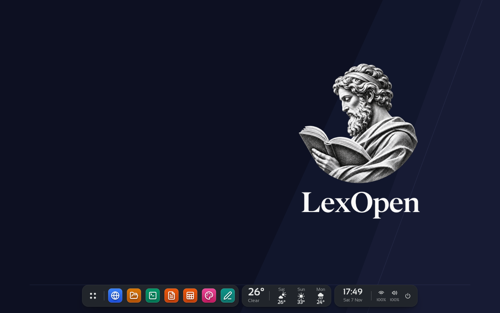

Tu trabajo jurídico y académico, conectado.
Organiza tus causas, conserva tus fuentes y prepara tus escritos en un mismo espacio. Altazor te acompaña en la conversación y en su escritorio de trabajo.
Ver descargas de LexOpenDe tus documentos a tus ideas.
Un espacio para trabajar con el expediente y otro para construir conocimiento. Tú eliges los apartados que necesitas.
- Causas y agendaReúne documentos, hechos, tareas y plazos de cada expediente.
- Biblioteca y fuentesOrganiza tus libros y documentos, consulta pasajes y conserva el origen de tus referencias.
- Escritura e investigaciónDesarrolla borradores, trabajos académicos y materiales docentes con revisión de sus fuentes.
Altazor, tu asistente.
Conversa, adjunta los archivos que elijas y encarga una tarea. Altazor dispone de un escritorio propio con herramientas para documentos, hojas de cálculo, PDF y lectura de archivos.
Puedes observar su pantalla, revisar las operaciones que propone y tomar el control. Las propuestas de IA requieren tu criterio profesional; conserva y comprueba las fuentes antes de utilizarlas.

Escritorio real de Altazor con la gráfica de LexOpen.
Tú eliges qué conectas.
Conecta Google Drive para buscar y leer los archivos que solicites, o GitHub para consultar tus repositorios públicos. Inicias sesión en la página oficial del servicio y puedes desconectar la cuenta cuando quieras.
La autorización renovable permite conservar el acceso sin repetir el ingreso con cada uso. LexOpen guarda las credenciales en su entorno protegido: no aparecen en la conversación ni en los documentos del escritorio.
Las conexiones descritas son de lectura. El acceso a una cuenta, sus archivos y las tareas de IA se rige por los permisos que autorices y por la configuración de tu instalación. Conoce cómo se utilizan y conservan tus datos.